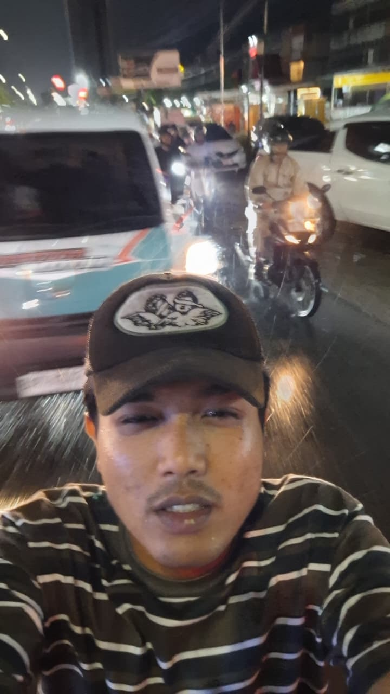

THE ARCHITECT BEHIND THE NOISE

Saya percaya bahwa komunikasi bukan sekadar transmisi pesan, melainkan alat untuk mengintervensi budaya dan membentuk perspektif baru.
Sebagai mahasiswa Ilmu Komunikasi dengan ketertarikan pada kultur underground dan media jalanan, saya menggabungkan kedisiplinan akademis dengan kebebasan berekspresi. Fokus saya berada pada persimpangan antara Public Relations, Copywriting, dan Visual Storytelling.
Copywriting
Manifesto & ScriptStrategy
Media CampaignTRACK RECORD
Content Strategist & Creator
Menganalisis tren audiens dan merancang strategi konten digital untuk kampanye independen. Memastikan pesan tersampaikan dengan identitas visual yang kuat.
Public Relations Manager
Memimpin divisi humas untuk acara berskala universitas. Mengelola hubungan dengan mitra media, menyusun siaran pers, dan menangani komunikasi krisis.
Street Journalist & Zine Editor
Mendokumentasikan realita sosial melalui fotografi jalanan dan mempublikasikannya dalam format media cetak independen (Zine).
GIGS & STAGE ARCHIVE
Dokumentasi eksekusi lapangan, manajemen panggung, dan aktivitas live event.
 PHOTO
PHOTO
Stage Management
Eksekusi acara musik.
Aftermath / Teaser
Dokumentasi visual singkat.
 PHOTO
PHOTO
Art Exhibition
Kurasi karya seni lokal.
 PHOTO
PHOTO
Zine Release Party
Peluncuran zine indie.
Behind The Scenes
Proses kreatif di lapangan.
COMMUNICATION & MEDIA LAB
Dokumentasi kampanye humas, liputan jurnalistik, dan kegiatan edukasi media.
 PHOTO
PHOTO
Street Journalism
Riset pergerakan jalanan.
 PHOTO
PHOTO
Campus PR Campaign
Strategi humas UIN Suska.
 PHOTO
PHOTO
Creative Workshop
Pelatihan media digital.
 PHOTO
PHOTO
Podcast Session
Diskusi publik interaktif.
CREATIVE FREQUENCIES
Audio selections that drive the creative process.
 POP-PUNK
POP-PUNK
IN BLOOM
Neck Deep
 POP-PUNK
POP-PUNK
FIRST DATE
Blink-182
 ALT-ROCK
ALT-ROCK
DROWN
Bring Me The Horizon
 POP-PUNK
POP-PUNK
DECEMBER
Neck Deep
 POST-HARDCORE
POST-HARDCORE
CAN YOU FEEL MY HEART
Bring Me The Horizon